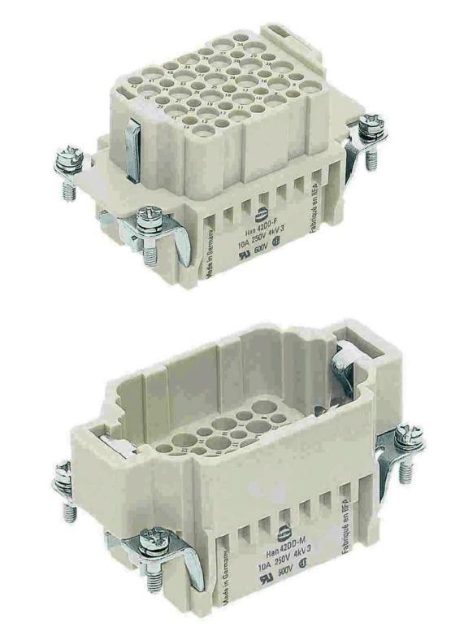
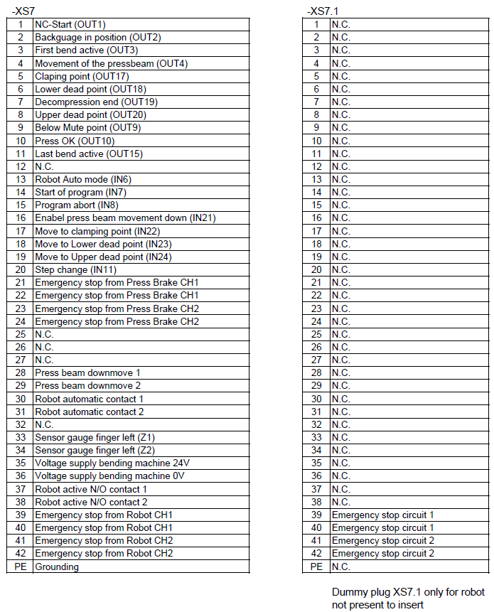
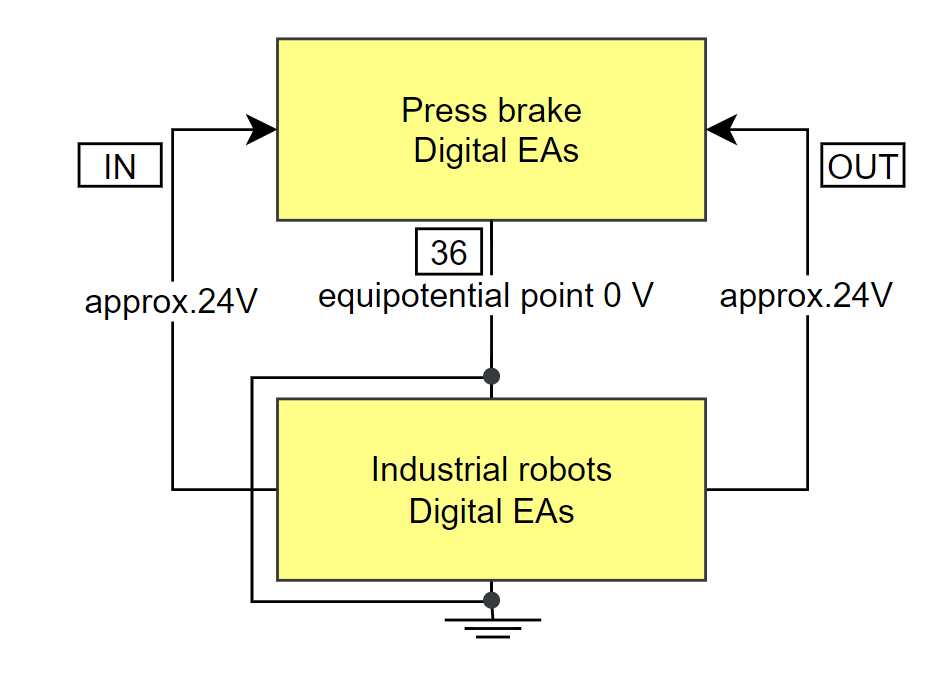
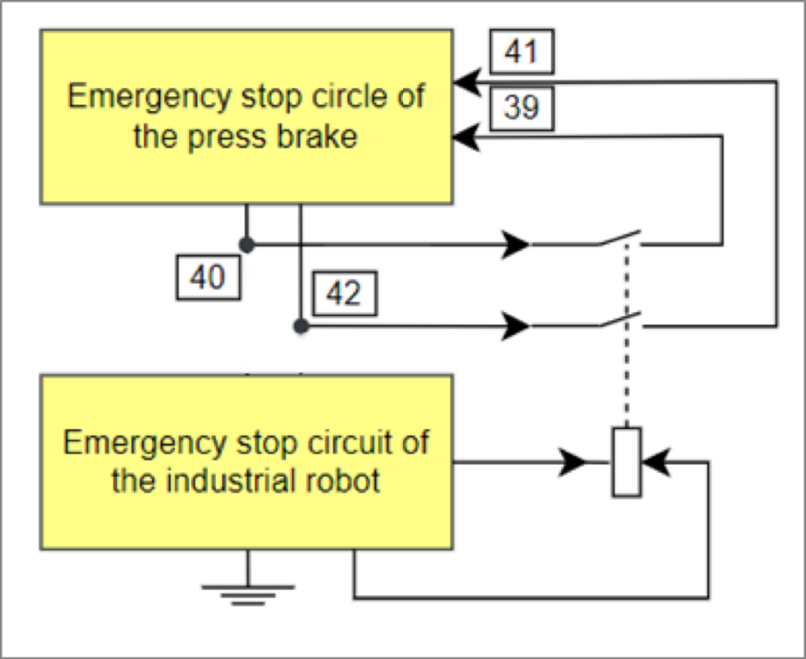
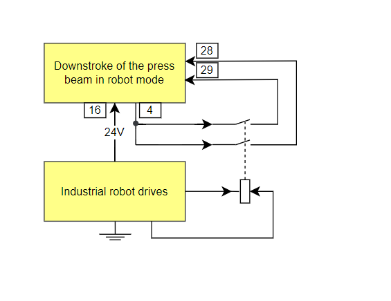

Description of connecting plug XS7
##View of connecting plug XS7The 42-pin XS7 bushing is positioned at the left of the electrical cabinet.

If no robot is connected to the press brake, a dummy plug should be plugged in since the press brake is otherwise in EMERGENCY STOP status.

XS7 with dummy plug
This dummy plug is always required if no robot is connected. If not used, the press brake remains permanently in EMERGENCY STOP.

XS7 plug with connected cable
Note
The robot must also remain plugged in while in manual mode and may not be replaced by the dummy plug.
Defaults for the XS7 plug
Connector shell 108-gg-R-M25 with number 1836632.Pivot insert Han 42 DD with number 0142923.Crimp contact pin 0.5mm2 standard with number 0093905.Screwed cable gland M25 (IP68) 2372482.They all can be order by TRUMPF China.

Contact pins and bushings with clamp terminal
Installation opening for the XS7 plug
The section for the robot plug connection for machines is available since version S02.
Press brakes supplied as of version S02 (2022-04-01) are prepared for the robot interface. The cutout for the XS7 plug for the electrical cabinet is already available.
XS 7 plug and XS 7.1 plug signal assignment
Pin assignments and electrical connections of the 42-pin XS7 plug and the pin assignment of the inputs and outputs of the RIGHT ANGLE control module are described in more detail in the following

Note 1
Pins 37 and 38 are bridged by the press brake if the robot has been switched to an active state using the key switch. These switches can be used to switch the robot’s drives off if the press brake is operated manually.
Pins 35 and 36 of the press brake provide a power supply secured with 2A automatic monitoring. With pin 35, all digital inputs for the blank holder with 24V are set to logically true, while consumers driven by digital outputs of the press brake have their zero potential at pin 36. Pins with the comment BendGuard controller are directly electrically connected with the safety control. If an external voltage is applied here, the BendGuard controller immediately issues an error message and prevents the press beam from moving.
Note 2
Pulsed signals from the blank holder’s safety control which are consecutively numbered on the blank holder side as contacts, and signal transmission from the press brake stroke trigger output at pin 4 must always be switched potential-free by the robot. The stroke trigger output therefore also contains the comment output 4 and contact 4a.
Note 3
When the robot receives stop active signal from the machine via Pin 21/22 and Pin 23/24, the E-stop feedback signal at Pin 39/40 and Pin 41/42 from Robot to Press Brake muss still be active when the safety circuit of robot is not interrupted.
Electrical installation at plug XS7
Note
Only low voltages of less than 30V, which must be isolated galvanically from the supply network, can be applied to the pins of the XS7 plug. Otherwise, the electronics of the press control system are at risk of being destroyed immediately.
The TruBend press brake and the industrial robot have a common ground potential with pin 36 on plug XS7, which in turn is positioned on a common ground (plug housing). If the control voltage supply from the press brake and from the industrial robot do not deviate too much from each other, the blank holder inputs can be directly controlled from the robot’s semi-conductor outputs, and vice versa.
If a potential separation is required, this must be installed on the robot side, in its electrical cabinet. Due to the low control currents required and the many switching cycles needed, the potential separation can be performed with optocouplers or with small signal relays.

Digitals inputs and outputs with a common ground
Digital inputs and outputs
The digital outputs (OUT) and the digital inputs (IN) are connected to the Eckelmann controller via EtherCAT I/O module. There is no diagnostic screen in the control for the IO. The IO can only be observed via Beckhoff IO modules.
EMERGENCY STOP circuits
E-Stop from the robot to press brake
The press brake safety control is equipped with a two-channel EMERGENCY STOP circuit. The robot must provide its EMERGENCY STOP signal via two phased potential-free N/O contacts to the press brake: The contacts should be closed in the normal operation mode of the robot. If a E-stop is triggered by the safety device from the robot side, the contacts should be opened without delay. The robot is connected via contact pair 1a/1b at pin 39/40 and contact pair 2a/2b at pin 41/42 into the two-channel TruBend EMERGENCY STOP circuit.

Connection of the press brake and robot EMERGENCY STOP circuits.
E-Stop from the press brake to robot
The press brake uses a safety relay K1 in the robot interface module to provide a two phased potential-free N/O contacts to the industrial robot: The contacts between pin 21/22 and between 23/24 are closed in the normal operation mode of the press brake. If an Emergency Stop is triggered, the contacts are opened without delay.
Robot should integrate the contact pairs in its safety circuit design to process the safety shut-down of the robot’s moving components in accordance with EN 60204.

Note 1
If the rear safety door of the press brake is opened, the Emergency safety circuit of the press brake will be interrupted. So in this case, the robot is able to react according to the E-stop signal via Pin 21/22 and Pin 23/24
Note 2
Avoidance of E-Stop interlock between Robot and Press Brake
The avoidance of Emergency Stop interlock between robot and press brake should be realized from the robot side:
In case of E-stop triggered from the PRESS BRAKE side (contact pair at Pin 21/22 and Pin 23/24 are open), the E-stop feedback signal from robot to press brake at Pin 39/40 and 41/42 should remain CLOSED when the safety circuit of robot is not interrupted.
Note 3
The robot must always be integrated in each possible operating status into the press brake’s EMERGENCY STOP circuit since the robot and press brake together form a closed work cell.
Press beam stroke triggering
The stroke triggering of the press beam is relevant to safety and always requires two-channel permission by means of two potential-free N/O contacts of the industrial robot. The press brake control triggers the foot down switch electrically via output 4 and therefore pin 4. The robot must provide permission in terms of safety and function via two N/O contacts which bridge the three contacts 4a at pin 4, 4b at pin 28 and 4c at pin 29, and via the input 21 at pin 15. Pin 28 and pin 29, and therefore the contacts 4b and 4c must not be switched in parallel. Two N/O contacts must be used, or it will not be possible to identify unintentional switching of an individual channel of the press brake safety control.
Note
In teach mode of the work cell, it must be possible to safely interrupt the downward movement of the press beam at any time using the enable key of the robot’s manual mode terminal. Once the robot drives have been safely shut down, it must also be possible to safely prevent the downward movement of the press beam.

Press beam stroke triggering with robot permission
Position control at the clamping point and the lower dead point
Position control is always active at the clamping point and the lower dead point if the robot provides permission as in the previous chapter Press beam stroke triggering (see section 12.8, page 34) for the press beam. This means that the workpiece is always clamped in these positions by the press beam and the robot can release the workpiece for regripping, for example.
Releasing the rapid down movement of the press beam
Enabling of the press beam’s rapid down movement without an optical safety device is relevant to safety and always takes place safely on two channels via the industrial robot. To enable rapid down movement of the press beam, Pin 13 must be activated with 24V from robot, and the two contacts 3a and 3b must be bridged at pins 30 and 31.
Note
Only in automatic mode of the work cell can the press beam move downward in rapid traverse without an optical safety device.

The speed of the press beam is already reduced to a safe working speed at the upper dead point if the press beam moves downward in the work cell’s teach mode.
The mute point is programmed in as a position for each bending step and is therefore independent of the safety mode type.
Only if all the fences and doors are closed, all the safety devices are all activated, then the operators can start operating the machines.
Step change
The bending step change always occurs automatically for the TruBend at the upper dead point. The backgauge axes are moved once the robot sets the signal STEP CHANGE, input 11 at pin 20. This means that the robot can only remove the workpiece from the blank holder before the backgauges move. The backgauges would otherwise pull the workpiece off the robot’s gripper.
Indicating the first bend
Output 3 at pin 3 First bend active is set once the press brake’s bending program is positioned in the first bend. If the bending step is advanced or the program is stopped, this output is reset. This ensures that the robot inserts the new sheet blank precisely in the blank holder at the first bending step.
Automatic program start
If input 7 is set at pin 14 Start of program the selected bending program, which must be in Automatic mode, is started. The green key on the operating panel lights up at this point and output 3 at pin 3 First bending step in bending program selected is set at position bend 1. If necessary, the hydraulic system is switched on beforehand, the tools clamped, and the press brake’s press beam is referenced fully automatically.
Program abort
At pin 15 Program abort is set, the bending program is stopped. Then, input 8 should be reset by the robot, otherwise an automatic program start will no longer be possible.
Press brake OK
The press brake is malfunction-free and the key switch is set to robot mode. All EMERGENCY STOP push-buttons are unlocked and all safety doors closed. The bending program which must match the robot movement program is selected on the press brake in automatic mode (AUTO). Output 10 at pin 10 is set and additional functions can be remotely controlled via the robot interface Ios.
Error acknowledgement
Safety control errors can be acknowledged using the foot up switch once the cause of error has been eliminated. Only at this point can the robot control the press brake via the robot interface.
Backgauges
In automatic mode, the backgauges can move fast forward in X direction. The evasive movements with which the two gauge fingers bypass the tools can be executed considerably closer to the tools. The gauge fingers must not collide with lower tools.
Embossing, hemming and folding
The signal sequence is the same as for air bending.